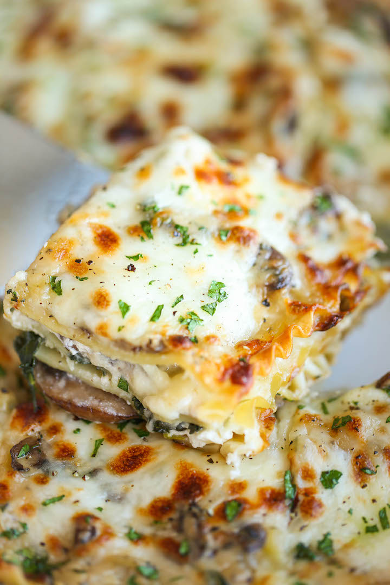

Creamy Spinach and Mushroom Lasagna

Description:
This Creamy Spinach and Mushroom Lasagna has layers of sautéed spinach and mushrooms mixed together with a ricotta cheese mixture and a drool-worthy white sauce. It’s all layered with lasagna noodles, covered in mozzarella cheese and baked until you have a hearty, rich, gooey lasagna!
Ingredients:
- 9 lasagna noodles
- 1 package (15-ounce) package whole ricotta
- 2 (10-ounce) packages frozen spinach, thawed and drained
- 3 cups shredded mozzarella cheese, divided
- 3/4 cup freshly grated Parmesan, divided
- 2 tablespoons chopped fresh parsley leaves
for the sauce:
- 1/4 cup unsalted butter
- 2 cloves garlic, minced
- 1 pound cremini mushrooms, thinly sliced
- 1 onion, diced
- 1/4 cup all-purpose flour
- 3 cups milk, at room temperature
- 1 teaspoon dried basil
- 1/2 teaspoon dried oregano
- pinch of nutmeg
- kosher salt and freshly ground black pepper, to taste
Steps:
- Preheat oven to 350 degrees F.
- To make the sauce, melt butter in a saucepan over medium heat. Add garlic, mushrooms and onion. Cook, stirring occasionally, until tender, about 3-4 minutes. Whisk in flour until lightly browned, about 1 minute.
- Gradually whisk in milk, and cook, whisking constantly, until slightly thickened, about 2-3 minutes. Stir in basil, oregano and nutmeg until fragrant, about 1 minute; season with salt and pepper, to taste; set aside.
- In a large pot of boiling salted water, cook lasagna noodles according to package instructions.
- Spread 1 cup mushroom sauce onto the bottom of a 9×13 baking dish; top with 3 lasagna noodles, 1/2 of the ricotta cheese, 1/2 of the spinach, 1 cup mozzarella cheese and 1/4 cup Parmesan. Repeat with a second layer. Top with remaining noodles, mushroom sauce and cheeses.*
- Place into oven and bake for 35-45 minutes, or until bubbling. Then broil for 2-3 minutes, or until top is browned in spots. Let cool 15 minutes.
- Serve, garnished with parsley, if desired.